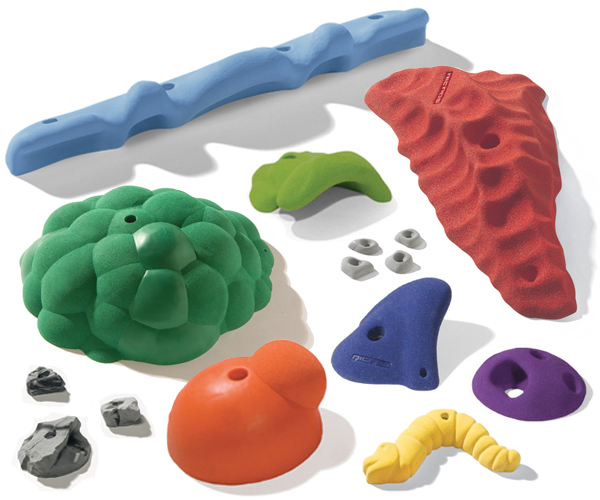

There are various amount of handholds and footholds in indoor rock climbing. Some handholds are not always
grippable, either due to its shape or friction. There are many kinds that are used for your feet, and your hands.
One of the hardest footholes is called the pancake. The pancakes are very hard to use because they are flat circles
on the all for only your feet. My least favorite kinds of hand holds are the round fat handholds. It is difficult
because its like holding on to a ball but squarish with smooth sides.
